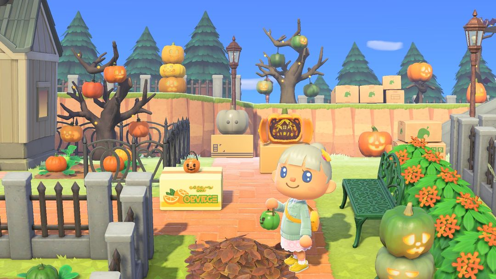
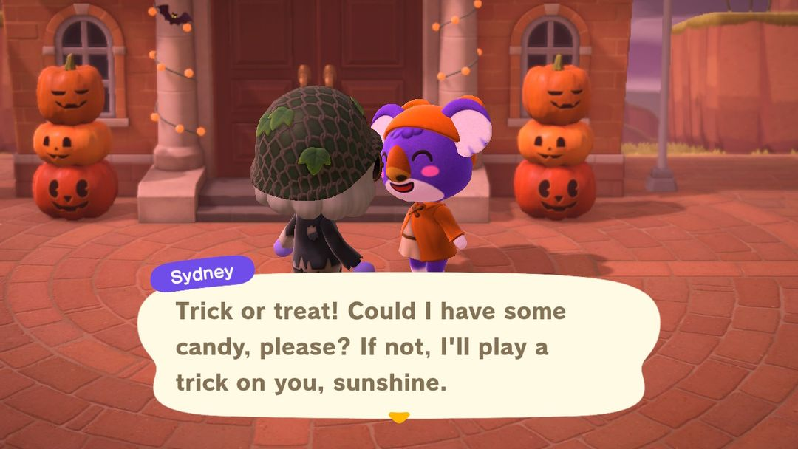
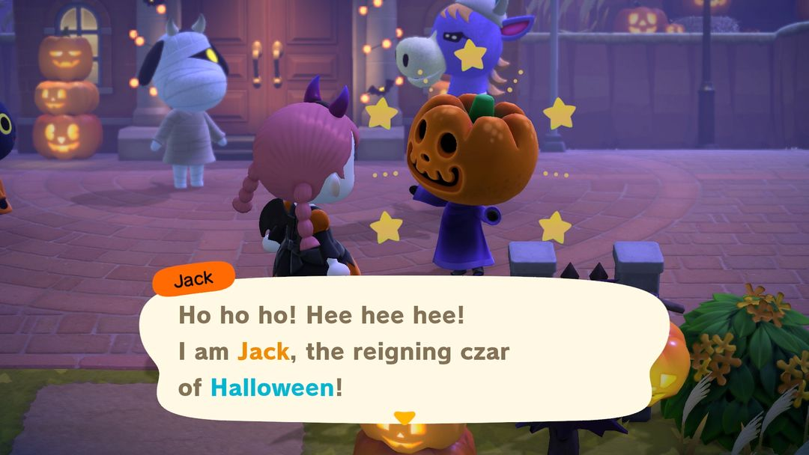

万圣节：10 月 31 日晚上 5 点开始，糖果要提前攒
南瓜王、糖果、棒棒糖，还有万圣节家具的DIY手册
万圣节一年只有一晚：10 月 31 日傍晚 5 点到半夜 12 点，南北半球是同一天。这一晚岛民们换上变装在岛上四处溜达，见人就讨糖；南瓜王也会在服务处一带转悠。万圣节马车、南瓜王的头套和长袍，都得赶在这一晚拿到手。
真正要提前张罗的只有糖果。Nook商店的糖果每人每天只能买 1 颗，拖到 31 号当天才想起来，临时也只买得到一颗。所以下面先说 10 月里能做哪些准备，再说当晚糖果怎么花。

万圣节家具摆在户外（图：任天堂宣传图，经 Nookipedia）
0110 月里能先做的事
10 月 1 日，南瓜王会寄来一封信，里面夹着一幅「南瓜王的肖像画」，算是提前来打声招呼。
每天买一颗糖
也是从 10 月起，Nook商店的货架上摆出了糖果，120 铃钱一颗。价钱不贵，麻烦的是每人每天只能买 1 颗，最好每天上线先去店里捎一颗，从月初攒起，到月底能攒下三十来颗。
岛上有第二个角色的话，让那个角色也天天跑一趟；去朋友岛上串门时，顺路在那边的 Nook商店再捎一颗。这样一天能多攒一两颗。
种南瓜
万圣节家具几乎都离不开南瓜，最吃量的是橘色南瓜，光一辆万圣节马车就要 30 个（材料表在第 4 节）。10 月 Nook商店会进南瓜苗，280 铃钱一个；然然那里一年四季都备着货。打算做全套的话，南瓜苗趁早种下去。
学万圣节的DIY手册
10 月里打下来的气球，有可能掉出万圣节的DIY手册。去岛民家串门时撞见他们正埋头做 DIY，也有机会学到万圣节的。要是那张你已经学过，岛民就不教了，转手塞给你别的：七成是 5 个橘色南瓜，三成是 1 颗糖果。
衣服和装扮
ABLE SISTERS 这个月会挂出万圣节服装，比如破烂服。当晚穿着万圣节服装去岛民家能讨到糖（第 3 节细说），所以至少置办一件。想把脸也画上，可以拿 Nook里数兑换万圣节的人体彩绘和彩色隐形眼镜，各 2,400 里数。
到了 10 月 28 日，服务处门口会竖起两座万圣节塔，狸克、西施惠他们也戴上了小恶魔角、魔法师条纹帽。看到这些，万圣节就只剩几天了。
0231 日晚上
5 点一过，在外面闲逛的岛民就都套上了变装。凑过去搭话，他们会伸手跟你讨糖，这时候有三种应法。
给糖果，岛民会回赠一件万圣节家具。头几次回赠的东西有固定顺序：先是万圣节挂饰或万圣节桌上布置，然后是万圣节地毯，再是万圣节地板或万圣节墙，接着是挂饰和桌上布置的DIY手册，最后是其他还没学到的万圣节DIY手册。这几样都到手以后，再给糖就随机抽家具、DIY手册或南瓜。
给棒棒糖，岛民一定会回赠万圣节甜点盘。不过棒棒糖来之不易，一般先留着给南瓜王，原因在下面。
不给，岛民就要捣蛋，往你脸上抹一脸彩绘。

岛民讨糖：不给就恶作剧（英文版画面）（图：Nookipedia）
棒棒糖从哪来
棒棒糖商店不卖，只能拿糖果从岛民手里换：岛民收下糖果，除了回赠家具，还有一定几率顺手塞你一根棒棒糖。几率随你已经送出的糖果数往上涨，给到第 4 颗时一定会出；出过一次，计数就清零重来。
| 已经给过的糖果 | 这次出棒棒糖的几率 |
| 0 颗 | 0% |
| 1 颗 | 25% |
| 2 颗 | 40% |
| 3 颗 | 60% |
| 4 颗及以上 | 100% |
这个计数是每个岛民各算一份，还是全岛一起算，查到的资料说法不太一致，这里没法给准话。
南瓜王
南瓜王当晚守在服务处附近。他也会找你讨糖，不过塞给他糖果还是棒棒糖，回礼差得挺多。
给他棒棒糖，前三根依次换来万圣节马车、马车的DIY手册、万圣节棒的DIY手册，从第四根起改送南瓜王头套或南瓜王长袍。
给他糖果，有三成机会换来头套或长袍，其余时候他只给你一把南瓜。
马车和这两张DIY手册都得从南瓜王手里拿，所以攒到的前三根棒棒糖最好先交给他。多出来的再去换头套、长袍，或者送给岛民换甜点盘。

南瓜王（英文版画面）（图：任天堂宣传图，经 Nookipedia）
03当晚糖果不够怎么办
糖果没攒够的话，当晚还有两个办法补救。
一是穿着万圣节服装上岛民家里坐坐。在家的岛民每隔 5 分钟会塞给你一颗糖，在屋里多待一会儿就能多攒几颗。
二是把南瓜王头套和长袍一起穿上。岛民会把你错认成南瓜王，反过来往你手里塞糖，不过每个岛民只会上当一次。穿着这一身在外面晃，岛民也不会追着你讨糖。
04万圣节家具要多少南瓜
常见几样万圣节家具的主要材料列在下面。最费料的是马车，除了 30 个橘色南瓜，还要三种木材各 20 个、铁矿石 10 个。
| DIY手册 | 主要材料 |
| 万圣节灯笼 | 橘色南瓜 4 |
| 万圣节塔 | 橘色南瓜 7 |
| 万圣节桌 | 橘色南瓜 14、软木材 10 |
| 万圣节甜点盘 | 橘色南瓜 1、糖果 3 |
| 万圣节饼干 | 面粉 1、四色南瓜各 1 |
| 万圣节马车 | 橘色南瓜 30、三种木材各 20、铁矿石 10 |
| 万圣节棒 | 万圣节灯笼 1、星星碎片 3 |
万圣节系列家具做好以后还能改造，拿不同颜色的南瓜当材料，就能改成橘、黄、绿、单色四种配色。想要橘色以外的配色，别的颜色的南瓜也得留几个。
小提示甜点盘做一个要 3 颗糖果。31 日当晚糖果先紧着换棒棒糖，甜点盘等活动散场了再做。
052.0 / 3.0 有什么变化
万圣节是 1.5.0 秋季更新加进来的。2.0 以后节日每年会自动到来，不用再等更新。3.0 的更新说明里没提到万圣节，玩法照旧。
动森圈圈 · 小程序和 iOS App 都搜「动森圈圈」